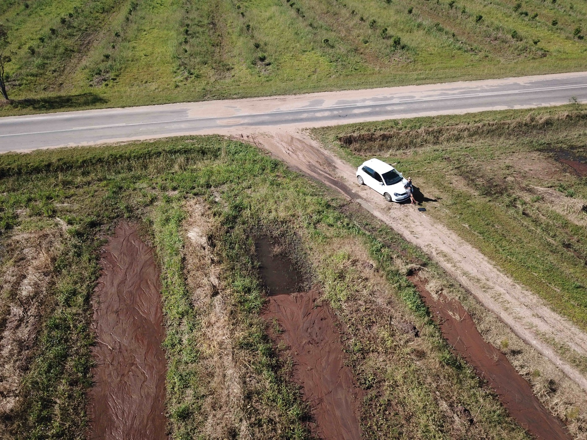

2019-04-30
Macadamia madness

Figure 1: New piles of silt deposited in the drainage lines after the 2019 Easter storm
Keywords: macadamia, water, keline, soil, erosion
On Easter Monday (22 April 2019) the provinces KwaZulu Natal and the Eastern Cape in South Africa experienced torrential rain. There is extensive damage across both provinces with continued aid being required for the people whose lives have been changed.
I recorded 474 mm in 48 hours which put April 2019 the highest rainfall month in 100 years (see bottom of post for top 8) I went out to take some pictures in an area which is currently developing large areas for nuts. There is extensive wash and large piles of what looks like river sand :(
The lands were planted to Gum for decades before being changed to Macadamia nuts. There is an area of >250 hectares in total being developed in this site. The ridging used to make these beds is a copy paste model that so many farmers are using and are made in straight lines for machine access. They are directed for designed for drainage by shedding water from the low points on the ridges to the wetter valleys. There are several age groups of Macadamias that have been planted with the newest dating to around January 2019.
In this particular example we were on top of the hills in the plateau where they received +-550mm in 48hrs. I am interested in what your initial thoughts are and whether Keline Design would have yielded a different field layout. I see that there is clearly a lack of cover on the soil. To see my property during the last push of the rain you can go check out my YouTube Channel or watch it below.
Date and Location: 30 April 2019 https://goo.gl/maps/wZpyDtEAizsHyGN57Date
TOP 8 MONTHLY TOTALS FOR THE PAST 100 YEARS! 1) 678 mm - 2019 April 2) 641 mm - 1978 April 3) 549 mm - 1976 March 4) 536 mm - 1954 October 5) 508 mm - 1987 September 6) 502 mm - 1913 March 7) 491 mm - 1977 February 8) 480 mm - 1953 March